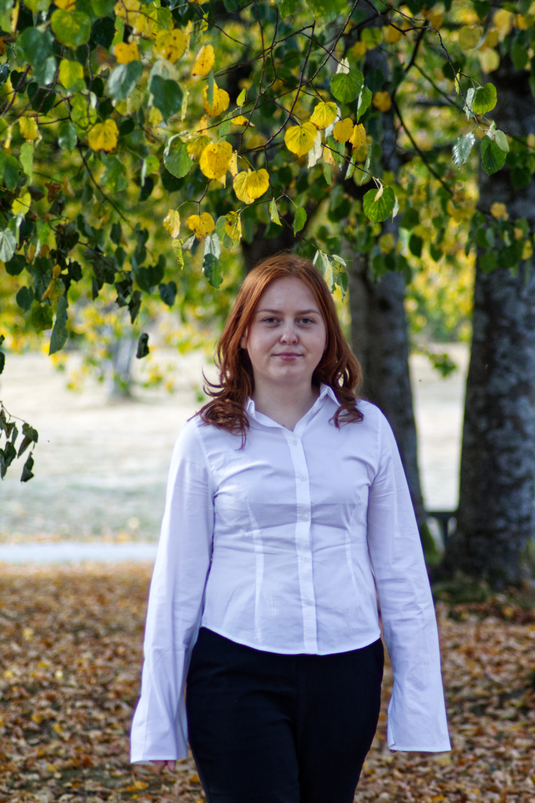

IT og informasjonssystemer
Ellen Hole Runestad
3. års student ved Universitetet i Agder med interesse for frontend, UX-design og testing av digitale løsninger.


Om meg
Hei! Jeg heter Ellen Hole Runestad, og er 24 år og kommer fra en liten plass utenfor Stavanger.
Jeg liker å være kreativ, lære nye ting og samarbeide med andre. Innen IT interesserer jeg meg spesielt for frontend, og jeg synes det er spennende å lage løsninger som er enkle og brukervennlige.
Utdanning
Bachelor i IT og informasjonssystemer
Universitetet i Agder
2024 – 2027
Prosjekter
Her kan du vise noen utvalgte prosjekter fra studiet, med en kort beskrivelse av hva du jobbet med og hvilken rolle du hadde.